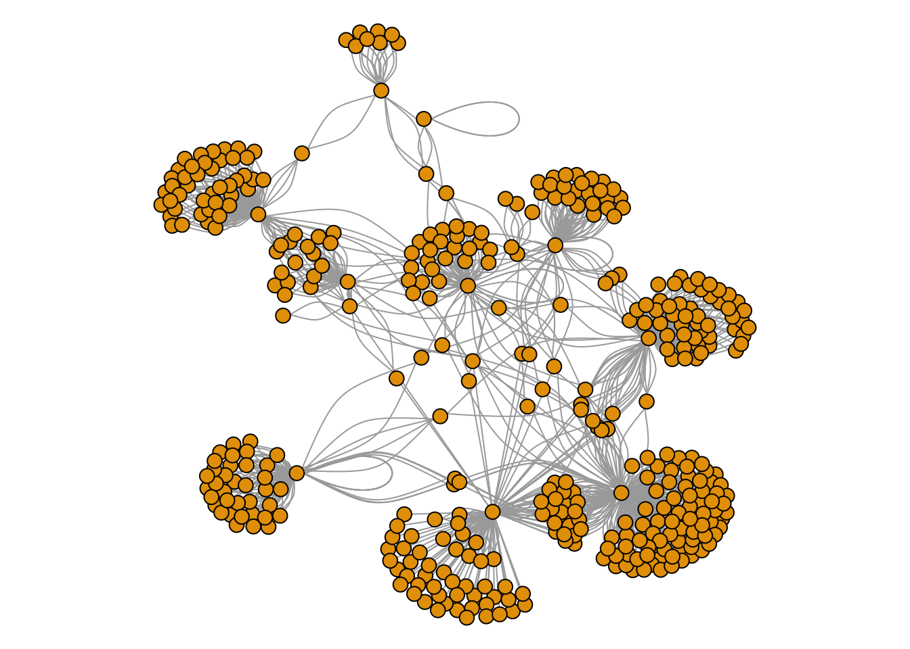

Research Areas
• Development of a novel methods for capturing and understanding ontology driven species interaction data.
• Approaches for determining host associations from natural history collections data.
• The current state of arthropod biodiversity data: Addressing the impacts of global change.
• Dialogue between entomology with media and performative arts.
Research Statement: My field of research, known as Biodiversity Informatics, aims to advance knowledge in biology and biodiversity by facilitating the digital capture, computational interpretation, and electronic dissemination of biological information. I draw on rich sources of specimen-based information in natural history collections to further our understanding of biodiversity and conservation through research combining biological inquiry, large-scale biological collection digitization, and data science.
Biocollections Resources
Central to my research are natural history collections - massive sets of biological specimens that are housed in museums, tissue collections, herbaria, botanical gardens, and zoos, and that have been compiled over several centuries. Together, they constitute our biodiversity libraries. These collections have broad cultural significance, and more importantly, constitute enormous primary resources that support fundamental research in the biological sciences. These libraries of millions of biological specimens, ranging from preserved pollinating bees to dinosaur remnants, shed light on the past, and illuminate ways that the climate has changed, that species are lost, and how biological knowledge has evolved. They also constitute voucher repositories for specimens used in research and identification of organisms of all varieties.
As informational resources, these collections hold tremendous value, but remain underused. There are presently large-scale initiatives to digitize the biological material contained within them, as evidenced by funding initiatives such as the National Science Foundation’s Advancing Digitization of Biological Collections (ADBC) program, the primary funding support for my current work. A major focus of my research is to combine disparate digitization efforts in order to facilitate information processing and biological inquiry. To this end, I examine processes through which we capture information in digital formats, how we publish and share biological information, preserve at risk information, and use this information in scientific activities. At its heart, this process involves the digitization of physical specimens and textual collection event data, how we manage these digital records, how we assess the quality of these data, and how we may augment them with salient metadata. My work is consequently aligned with a major thrust of research in biodiversity informatics that has sought to enable access to biodiversity data troves via computing systems, data science methods, and new technologies.
Data Science for Biocollections Research
A primary scientific objective of my research is to expand the utility of existing natural history collections data obtained from the digitization of specimens by combining methods from computer science, including ontologies and machine learning, with biological domain expertise to yield new knowledge of broad interest to biodiversity research. There are currently major efforts to digitize and capture information found on specimen labels from biological collections. Through these efforts, large numbers of existing specimens have been digitized, including 24,793,902 specimen occurrence records in the Integrated Digitized Biocollections Data Portal and 525,466,574 occurrence records in the Global Biodiversity Information Facility. These data open up new research potential for trait-driven inquiries over thousands of records. However, due to the size of these repositories, new data analysis techniques are urgently needed in order to uncover and summarize the valuable biological information contained in these data.
Despite the emergence of standards for the capture of such information, it remains notoriously difficult to infer biologically relevant conclusions from the data, due to a number of specific challenges. These include the presence of non-standard information and formatting, collector or specimen identification errors, and incomplete or duplicated records. The data also include free text notes that require domain expertise to interpret. Analysis methods beyond those that are conventionally applied in biodiversity research will be needed in order to extract meaningful information from these valuable repositories in the face of such challenges. Fortunately, research in the field of Data Science has rapidly matured and been in other areas that involve large quantities of information (social media and genomics). Computer Science methods that include machine learning and ontology have yielded a variety of new techniques for pattern recognition, data quality assessment, and trend analysis. Through my work, I aim to systematically address the challenges in utilizing such data through the use of machine learning and ontological reasoning methods, which I aim to apply in order to form biologically relevant inferences from data.
As an example, one focus of my research addresses questions in data science motivated by biological questions concerning a major class of herbivorous insects known as the Hemiptera (e.g., aphids, scales, treehoppers, cicadas, and true bugs), with special attention to the reduced wing (brachypterous) plant bug fauna Mirini. Through this work, I aim to use biological collections data to achieve a number of specific aims: (1) To use existing hemipteran data repositories as model datasets for a series of directed studies in data science, machine learning and ontology, in order to develop novel methods for analysis of habitat and host usage, predict cumulative species loss, and correlate wing length with species specific ecological parameters; (2) To create the first comprehensive, exclusively data driven catalog of North American hemipteran habitat and host usage evaluated by the newly developed methods; (3) To predict cumulative insect species loss by accounting for insect herbivore host specificity, abundance, phylogeny, and habitat preference evaluated by the newly developed methods; (4) To describe the virtually unknown reduced wing (brachypterous) plant bug fauna (Mirini) from the botanically diverse Western Cape and Namaqualand of South Africa; (5) To evaluate the correlation between brachyptery, plant host, temperature, and elevation using the newly described South African material together with previously digitized specimens of the highly endemic Western North American Miridae. My collaborators on this work include Dr. Jane Greenberg, Director of the Metadata Research Center, Drexel University, Dr. Michael D. Schwartz of the Canadian National Collection (Miridae plant bugs), and Dr. Ward Wheeler of the American Museum of Natural History (biological systematic theory). This research is the subject of an NSF proposal that is currently under review.
Structured Language for Biological Discovery
One area of emphasis in my research is the modeling of knowledge and the development of semantics-centered applications in the biodiversity sciences (i.e. ontology). A general tactic pursued in my work is to ground biological information, especially species descriptions, in controlled and structured vocabularies. With my colleagues, I am seeking to accomplish this by developing standards for the use of structured vocabularies, and by designing digital formats for recording and publishing specimen information in open digital archives and journal articles. We have developed and promoted the use of one of the first comprehensive anatomy ontology - the Hymenoptera Anatomy Ontology - in order to illustrate the aforementioned principles, improve research on this important order of insects, and to serve as a reference example for the development of ontologies for biological information. This work is detailed in several related publications (Seltmann et al., 2012; Bertone et al., 2011; Seltmann, PhD thesis, 2013, Wright & Seltmann, 2014;Deans et al., 2015). Additionally, I extended the host-insect interaction module for an ADBC biocollections database to include controlled vocabularies, a research effort I hope to extend with these recently submitted proposals, Lepidoptera of North America Network: Documenting Diversity in the Largest Clade of Herbivores, NSF ADBC Program [EF-1503591] and Weevils of North America - Building the Foundation for Thematic Collections Network-Based Monography [DEB-1532032].


Information Capture and Sharing for Natural History Collections
A second major question guiding my research is how we can employ computational tools with cloud and semantic information processing to advance research on digitized biodiversity collections, through data analysis and mining for pattern discovery, and through automated quality control of information. Such tools furnish transformative methodologies that are dramatically reshaping the kinds of research questions we can address.
As one example, I recently supervised an NSF REU project aimed at analyzing correlations between newly digitized collection events of over 500,000 Miridae specimens (a key family of plant bugs) in the AMNH collection with historic rainfall data in the Great Basin area, spanning over 200 years. Through this analysis, combining historical climate records and geospatially indexed specimen information, we found evidence that diversity within the family Miridae increases with the quantity of annual rainfall, which corroborates general predictions of increased diversity in rain-rich areas of the planet. However, it poses further questions regarding the high level of endemism found in Southern California and other semi-arid regions of the world. Methodologically, I contribute advances in these by developing or enhancing technical tools and resources for facilitating the acquisition and collection of collections information. These include custom adaptations to Arthropod Easy Capture, for ontology driven species interaction collection data capture (Seltmann et. al. in prep), development of the Morphbank Biological Image Repository web software (Seltmann et al., J Morphology, 2007), contributions to the Integrated Digitized Biocollections (iDigBio) working groups on formal models for biodiversity data management, the Gigapan collection imaging initiative (Bertone, Blinn, Dew, Seltmann, Deans, ZooKeys, 2012), and the Treehoppers knowledgebase, which aggregates community-sourced specimen data based on the work of a leading expert on the field (Deitz, L.L., Wallace, M.S., Seltmann, K.C., and Yoder, M.J., 2013).
Structural Morphology
A primary biological question posed in my work revolves around the structural morphology of insects, and how such specializations can be semantically characterized in ways that improve taxonomic research. My present research interests in structural morphology include novel descriptions of features to inform anatomy ontology (Seltmann, 2012), descriptions of the feeding and head structures of wasps, indications of generalized head morphology due to internal musculature (Seltmann, PhD thesis, Popovici et al., 2014) and skin surface features of Western United States desert dwelling beetles that produce cuticular waxes for environmental protection against water loss.
summary(cars)## speed dist
## Min. : 4.0 Min. : 2.00
## 1st Qu.:12.0 1st Qu.: 26.00
## Median :15.0 Median : 36.00
## Mean :15.4 Mean : 42.98
## 3rd Qu.:19.0 3rd Qu.: 56.00
## Max. :25.0 Max. :120.00Including Plots
You can also embed plots, for example:

Note that the echo = FALSE parameter was added to the code chunk to prevent printing of the R code that generated the plot.